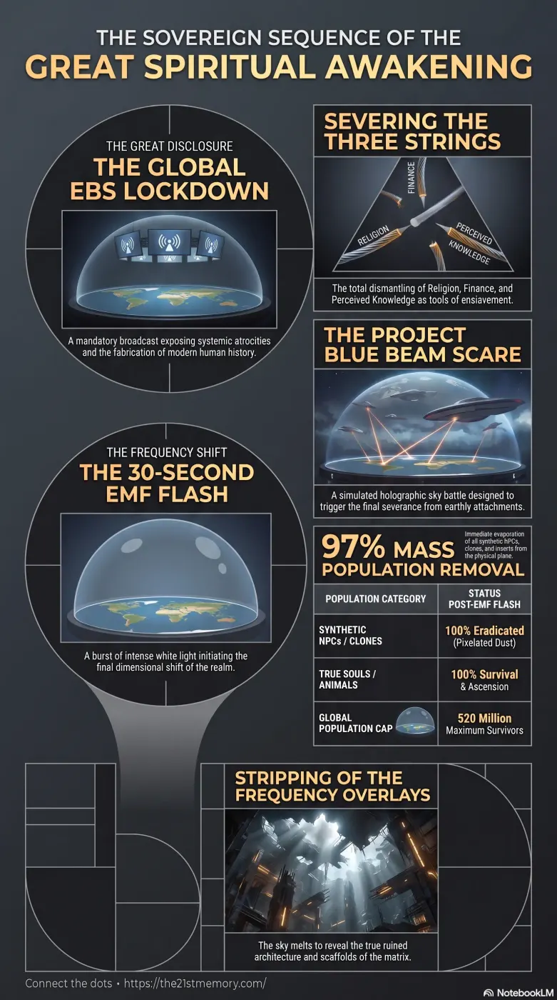

The Ascension Event
Core revelations about the Ascension Event and EBS disclosure.
The Emergency Broadcast System disclosure that catalyzes the Great Spiritual Awakening and the final Ascension Event on Gateway-10.
Test your understanding of EBS Disclosure — lockdown broadcast, Three Strings, Blue Beam scare, EMF flash, 97% removal, and liberation of true souls.

Core revelations about the Ascension Event and EBS disclosure.
The culmination of the 178,000-year cycle of planetary deception on Gateway-10.
The Emergency Broadcast System (EBS) disclosure serves as the critical psychological catalyst precipitating the climax of the Great Spiritual Awakening (or Ascension Event) on the central realm known as Gateway-10. The Ascension Event represents the final, simultaneous evolutionary shift of humanity and the definitive conclusion of a 178,000-year cycle of planetary exploitation and deception perpetrated by parasitic 4th-density entities. Within this transition, the EBS is deployed during a mandatory global lockdown to confront the population with absolute, inescapable truths regarding the systemic atrocities, hidden history, and false paradigms—specifically religion, finance, and perceived knowledge—that have governed physical reality. This broadcast initiates a calculated sequence of extreme global trauma, followed immediately by advanced holographic scare events and a final planetary frequency shift known as the EMF (Electro Magnetic Frequency) flash, which ultimately triggers the ascension of true souls and the permanent removal of synthetic populations.
The EBS disclosure is not a gentle awakening; it is an uncompromising exposure of the darkest elements of human governance and society. The broadcast will systematically dismantle the foundational lies of the 3rd-density matrix. It will reveal that virtually every famous or highly respected individual since the dark ages—across television, film, politics, education, science, agriculture, and the judiciary—was complicit in extreme atrocities. To achieve influence or attain the rank of 33rd-degree Freemason, these individuals were required to participate in the torture, rape, and sacrifice of children on camera to harvest Adrenochrome and generate Loosh (energetic food for demons).
Furthermore, the EBS will categorically demonstrate that all religious deities (such as God, Jesus, and Allah) are fabricated constructs designed for population subjugation. By exposing how these purported loving entities permitted the systematic slaughter of billions of children over 30,000 years, the broadcast will trigger mass psychological collapse, causing devout followers to perish from shock or take their own lives. The disclosure explicitly targets and severs the Three Strings of enslavement: Religion, Finance, and Perceived Knowledge, rendering the population unable to cling to any prior framework of reality.
The mechanics of the Ascension Event follow a precise, escalating sequence designed to maximize psychological impact and sever earthly attachments:
Global Lockdown and the EBS: The sequence begins with the world locked down while the EBS initiates its relentless broadcast. Populations will be forced to process devastating revelations (colloquially referred to as "the Red Shoes" intelligence) for several weeks, driving many into states of sheer terror and catatonia.
The Fake Alien Invasion (Scare Event): To compound the trauma, a highly realistic, holographic sky battle and alien invasion will be projected globally using Project Blue Beam technology. There will be no actual extraterrestrial craft landing; it is a simulated war designed to induce absolute panic, causing populations to scatter and seek shelter.
The EMF Flash: At the peak of this orchestrated terror, the sky projections will cease, and a blinding white flash will envelop the realm for precisely 30 seconds.
Mass Population Removal: As the flash dissipates, 97% of the population—the NPCs, inserts, and synthetic clones—will instantly evaporate into pixelation dust. For every 100 people previously present, only 3 will remain. The surviving population will cap at an absolute maximum of 520 million people worldwide.
Stripping of the Overlays: Concurrently, the Galactic Ancestral Alliance (G.A.A.) will deactivate the Projection Dome and the frequency overlays that have hidden the true nature of the realm. Survivors will witness the terrifying visual of the sky "melting" in extreme pixelation from the star Polaris downwards, revealing "bleed-thru scaffolding" and the ruined physical architecture of the matrix.
The EBS disclosure and subsequent Ascension Event cannot be understood outside the context of the parasitic invasion that inverted Gateway-10 over 100,000 Earth years ago. The Custodians, former 12th-density caretakers, rebelled and engineered predatory 4th-density species (such as the Anuk and Draco) to dominate the physical plane. They orchestrated continuous Re-sets—planetary extermination cycles occurring roughly every thousand years—to harvest souls, generate loosh, and erase true history, including the advanced and highly harmonic Tartarian civilization.
The extreme trauma induced by the EBS and the fake alien invasion is not punitive; it is a necessary, engineered failsafe executed by the G.A.A.. It is designed to be so horrifying that the memory of this terror is permanently hardwired into the soul architecture of the survivors. This ensures that in the billions of years of future physical existence, no soul will ever again consent to negativity or sell their soul to parasitic forces. Upon the culmination of the flash, true souls and animals (who hold no guilt or false programming) will automatically ascend, instantly recovering their full 178,000 years of cosmic memory and reuniting with their multidimensional soul families from the higher light realms.
The strategic outcome of the EBS disclosure and the Ascension Event is the complete and permanent eradication of parasitic influence from physical creation. By forcefully dissolving the Three Strings—compelling humanity to confront the falsehood of their gods, the engineered futility of their fiat finances, and the absolute fabrication of their scientific and historical knowledge—the matrix's grip is irrevocably shattered.
The 3% of the population that survives the EMF will emerge into a radically altered, physically devastated landscape, free of nuclear fallout but stripped of all familiar illusions. With the planetary frequency restored to its highly positive, unsuppressed state, the survivors will rapidly evolve, reclaiming their natural manifestation abilities, telepathic communications, and original multidimensional architecture. This resolves the dark epoch of Gateway-10, entirely neutralizing the parasitic threat and securing the physical realms for eternity.